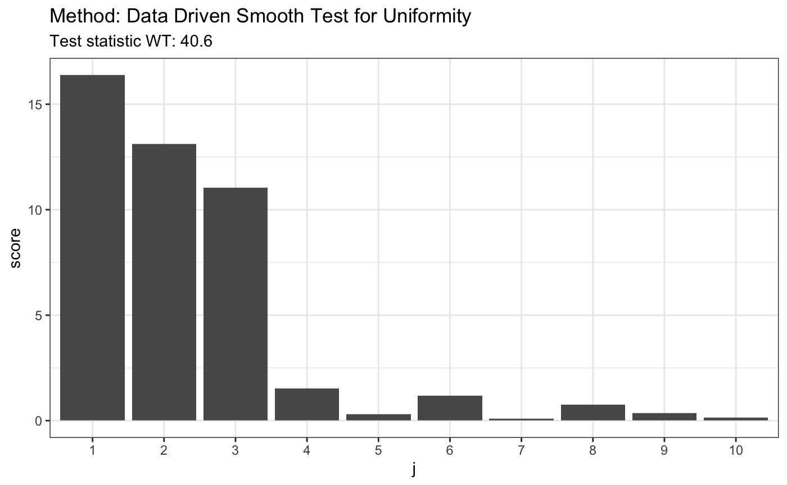
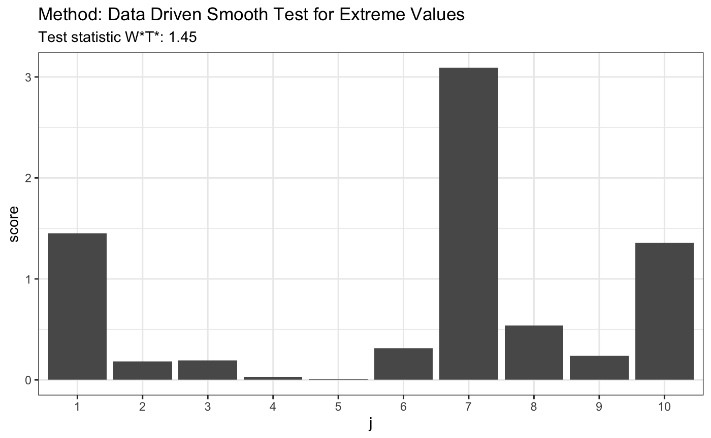
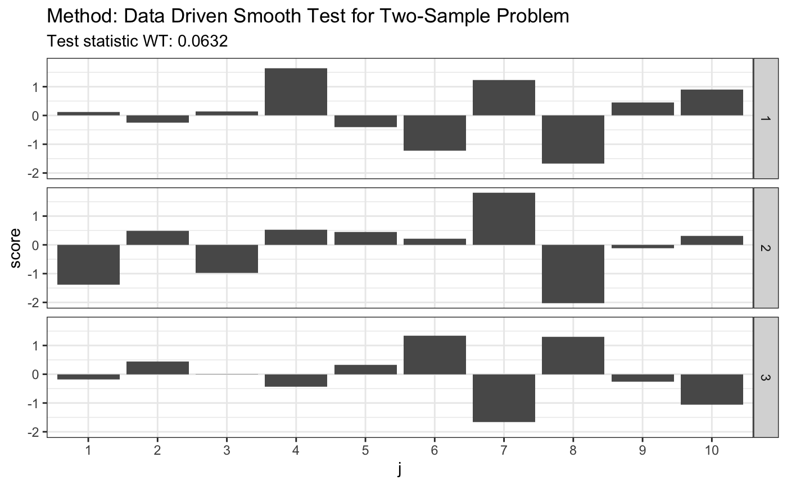

Examples for ddst package
Przemyslaw Biecek
July 26, 2019
examples_all.RmdData Driven Smooth Tests with ddst package
This document presents tests avaliable in the ddst package.
II. Data Driven Smooth Tests for Selected Goodness-of-Fit Problems
1. Data Driven Smooth Test for Uniformity
set.seed(7)
# H0 is true
z <- runif(80)
t <- ddst.uniform.test(z, compute.p = TRUE,
compute.cv = TRUE,
d.n = 10)
t##
## Data Driven Smooth Test for Uniformity
##
## data: z, base: ddst.base.legendre c: 2.4 d.n: 10 cv(0.05) : 0.0046734)
## WT = 0.31054, T = 1, p-value = 0.6046
# H0 is false
z <- rbeta(80,4,2)
t <- ddst.uniform.test(z, compute.p = TRUE,compute.cv = TRUE, d.n = 10)
t##
## Data Driven Smooth Test for Uniformity
##
## data: z, base: ddst.base.legendre c: 2.4 d.n: 10 cv(0.05) : 0.0043728)
## WT = 49.467, T = 3, p-value < 2.2e-16## [1] 0
2. Data Driven Smooth Test for Exponentiality
##
## Data Driven Smooth Test for Expotentiality
##
## data: z, base: ddst.base.legendre, c: 100, d.n: 10
## W*T* = 2.1593, T* = 1, p-value = 0.176##
## Data Driven Smooth Test for Expotentiality
##
## data: z, base: ddst.base.legendre, c: 100, d.n: 10
## W*T* = 12.238, T* = 1, p-value = 0.01## [1] 0.013. Data Driven Smooth Tests for Normality
3.1. Bounded Basis Functions
set.seed(7)
# H0 is true
z <- rnorm(100)
# let's look on first 10 coordinates
d.n <- 10
t <- ddst.normbounded.test(z, compute.p = TRUE, d.n = d.n)
t##
## Data Driven Smooth Test for Normality - Bounded Basis Functions
##
## data: z, base: ddst.base.legendre, c: 100, d.n: 10
## W*T* = 2.2232, T* = 1, p-value = 0.1581##
## Data Driven Smooth Test for Normality - Bounded Basis Functions
##
## data: z, base: ddst.base.legendre, c: 100, d.n: 10
## W*T* = 299.45, T* = 10, p-value < 2.2e-16# for Tephra data
z <- c(-1.748789, -1.75753, -1.740102, -1.740102, -1.731467, -1.765523,
-1.761521, -1.72522, -1.80371, -1.745624, -1.872957, -1.729121,
-1.81529, -1.888637, -1.887761, -1.881645, -1.91518, -1.849769,
-1.755141, -1.665687, -1.764721, -1.736171, -1.736956, -1.737742,
-1.687537, -1.804534, -1.790593, -1.808661, -1.784081, -1.729903,
-1.711263, -1.748789, -1.772755, -1.72756, -1.71358, -1.821116,
-1.839588, -1.839588, -1.830321, -1.807835, -1.747206, -1.788147,
-1.759923, -1.786519, -1.726779, -1.738528, -1.754345, -1.781646,
-1.641949, -1.755936, -1.775175, -1.736956, -1.705103, -1.743255,
-1.82613, -1.826967, -1.780025, -1.684504, -1.751168)
t <- ddst.normbounded.test(z, compute.p = TRUE, Dmax = d.n)
t##
## Data Driven Smooth Test for Normality - Bounded Basis Functions
##
## data: z, base: ddst.base.legendre, c: 100, d.n: 10
## W*T* = 3.7615, T* = 1, p-value = 0.08891
3.2. Unbounded Basis Functions
set.seed(7)
# H0 is true
z <- rnorm(100)
# let's look on first 10 coordinates
d.n <- 10
# calculate finite sample corrections
# see 6.2. Composite null hypothesis H in the appendix materials
e.v <- ddst.normunbounded.bias(n = length(z), d.n = d.n)
e.v## $e.0
## [,1] [,2] [,3] [,4] [,5] [,6]
## [1,] -0.003118967 -0.6935202 -0.002956126 -0.6265916 0.005252232 0.2493225
## [,7] [,8] [,9] [,10]
## [1,] -0.005572803 0.1643331 0.005080106 -0.3043065
##
## $v.0
## [,1] [,2] [,3] [,4] [,5] [,6] [,7]
## [1,] 0.9478394 0.8147186 0.6556153 0.5867975 0.6271109 0.5654675 0.5199736
## [,8] [,9] [,10]
## [1,] 0.5518196 0.4929518 0.489381# simulated 1-alpha qunatiles, s(n, alpha)
# see Table 1 in the JSCS article
s.n.alpha <- 4.4
r.alpha <- 2.708
t <- ddst.normubounded.test(z, d.n, e.v$e.0, e.v$v.0, r.alpha, s.n.alpha)
t##
## Data Driven Smooth Test for Normality - Unbounded Basis Functions
##
## data: z, d.n: 10, r.alpha: 2.708, s.n.alpha: 4.4
## NAs = 2.7435, As = 1
# H0 is false, same lenght n = 100
z <- rexp(100, 1)
t <- ddst.normubounded.test(z, d.n, e.v$e.0, e.v$v.0, r.alpha, s.n.alpha)
t##
## Data Driven Smooth Test for Normality - Unbounded Basis Functions
##
## data: z, d.n: 10, r.alpha: 2.708, s.n.alpha: 4.4
## NAs = 249.08, As = 9
# for Tephra data
z <- c(-1.748789, -1.75753, -1.740102, -1.740102, -1.731467, -1.765523,
-1.761521, -1.72522, -1.80371, -1.745624, -1.872957, -1.729121,
-1.81529, -1.888637, -1.887761, -1.881645, -1.91518, -1.849769,
-1.755141, -1.665687, -1.764721, -1.736171, -1.736956, -1.737742,
-1.687537, -1.804534, -1.790593, -1.808661, -1.784081, -1.729903,
-1.711263, -1.748789, -1.772755, -1.72756, -1.71358, -1.821116,
-1.839588, -1.839588, -1.830321, -1.807835, -1.747206, -1.788147,
-1.759923, -1.786519, -1.726779, -1.738528, -1.754345, -1.781646,
-1.641949, -1.755936, -1.775175, -1.736956, -1.705103, -1.743255,
-1.82613, -1.826967, -1.780025, -1.684504, -1.751168)
# calculate finite sample corrections
e.v <- ddst.normunbounded.bias(n = length(z))
e.v## $e.0
## [,1] [,2] [,3] [,4] [,5] [,6]
## [1,] -0.001745287 -0.7812591 -0.0003146211 -0.5289889 0.003045283 0.3671568
## [,7] [,8] [,9] [,10] [,11] [,12]
## [1,] -0.005166266 -0.006556786 0.00614837 -0.2153776 -0.005973216 0.2596683
## [,13] [,14] [,15] [,16] [,17] [,18]
## [1,] 0.00490113 -0.1825443 -0.003298743 0.05528399 0.001527895 0.06612
## [,19] [,20]
## [1,] 0.000115756 -0.1487876
##
## $v.0
## [,1] [,2] [,3] [,4] [,5] [,6] [,7]
## [1,] 0.9422175 0.7691471 0.6028542 0.5825068 0.6072724 0.5109567 0.5263274
## [,8] [,9] [,10] [,11] [,12] [,13] [,14]
## [1,] 0.524183 0.4622242 0.4965074 0.4581659 0.4443366 0.4631899 0.4147061
## [,15] [,16] [,17] [,18] [,19] [,20]
## [1,] 0.4448983 0.4167827 0.4114816 0.4252005 0.3854767 0.4197615# simulated 1-alpha qunatiles, s(n, alpha) and s.o(n, alpha)
# see Table 1 in the JSCS article
s.n.alpha <- 3.3
r.alpha <- 2.142
t <- ddst.normubounded.test(z, d.n, e.v$e.0, e.v$v.0, r.alpha, s.n.alpha)
t##
## Data Driven Smooth Test for Normality - Unbounded Basis Functions
##
## data: z, d.n: 10, r.alpha: 2.142, s.n.alpha: 3.3
## NAs = 66.704, As = 174. Data Driven Smooth Test for Extreme Value Distribution
library(evd)
set.seed(7)
# H0 is true
x <- -qgumbel(runif(100), -1, 1)
t <- ddst.evd.test (x, compute.p = TRUE, d.n = 10)
t##
## Data Driven Smooth Test for Extreme Values
##
## data: x, base: ddst.base.legendre, c: 100, d.n: 10
## W*T* = 1.4531, T* = 1, p-value = 0.9943
##
## Data Driven Smooth Test for Extreme Values
##
## data: x, base: ddst.base.legendre, c: 100, d.n: 10
## W*T* = 146208, T* = 10, p-value = 6e-04
III. Nonparametric Data Driven Smooth Tests for Comparing Distributions
5. Data Driven Smooth Test for k-Sample Problem
set.seed(7)
# H0 is false
x <- runif(80)
y <- rexp(80, 1)
t <- ddst.twosample.test(x, y, compute.p = TRUE)
t##
## Data Driven Smooth Test for Two-Sample Problem
##
## data: listxy, c: 2, d.n: 12
## WT = 36.108, T = (6, 6)
# H0 is false
x <- runif(80)
y <- rexp(80, 1)
z <- runif(80)
t <- ddst.ksample.test(list(x, y, z))
t##
## Data Driven Smooth Test for Two-Sample Problem
##
## data: listxyz, c: 2.3, d.n: 12
## WT = 73.211, T = (3, 12, 1)
##
## Data Driven Smooth Test for Two-Sample Problem
##
## data: listxyz, c: 2.3, d.n: 12
## WT = 0.063224, T = (1, 1, 1)
6. Data Driven Test for Stochastic Ordering
set.seed(7)
library("rmutil", warn.conflicts = FALSE)
# H0 is false
# 1. Pareto(1)/Pareto(1.5)
x <- rpareto(50, 2, 2)
y <- rpareto(50, 1.5, 1.5)
t <- ddst.forstochdom.test(x, y, t = 2.2, k.n = 4)
t##
## Data Driven Stochastic Ordering Test
##
## data: x y, t: 2.2, k.n: 4
## QT = 124.46, T = 5
# H0 is false
# 2. Laplace(0,1)/Laplace(1,25)
x <- rlaplace(50, 0, 1)
y <- rlaplace(50, 1, 25)
t <- ddst.forstochdom.test(x, y, t = 2.2, k.n = 4)
t##
## Data Driven Stochastic Ordering Test
##
## data: x y, t: 2.2, k.n: 4
## QT = 129.93, T = 5
# H0 is true
# 3. LN(0.85,0.6)/LN(1.2,0.2)
x <- rlnorm(50, 0.85, 0.6)
y <- rlnorm(50, 1.2, 0.2)
t <- ddst.forstochdom.test(x, y, t = 2.2, k.n = 4)
t##
## Data Driven Stochastic Ordering Test
##
## data: x y, t: 2.2, k.n: 4
## QT = 0, T = 17. Two-Sample Test Against Stochastic Dominance
set.seed(7)
# H0 is true
x <- runif(80)
y <- runif(80)
t <- ddst.againststochdom.test(x, y, alpha = 0.05, t = 2.2, k.n = 4)
t##
## Data Driven Test Against Stochastic Dominance
##
## data: x, alpha: 0.05, t: 2.2, k.n: 4
## VT = 0.9, T = 1# H0 is false
x <- runif(80)
y <- rbeta(80, 4, 2)
t <- ddst.againststochdom.test(x, y, alpha = 0.05, t = 2.2, k.n = 4)
t##
## Data Driven Test Against Stochastic Dominance
##
## data: x, alpha: 0.05, t: 2.2, k.n: 4
## VT = 41.6, T = 5
8. Data Driven Smooth Test for Upward Trend Alternative in k samples
set.seed(7)
# H0 is true
x = runif(80)
y = runif(80) + 0.2
z = runif(80) + 0.4
t <- ddst.upwardtrend.test(list(x, y, z), t.p = 2.2, t.n = 2.2)
t##
## Data Driven k-Sample Upward Trend Test
##
## data: listxyz, t.p: 2.2, t.n: 2.2
## U.T = 1105, p = 3# H0 is false
x1 = rnorm(80)
x2 = rnorm(80) + 2
x3 = rnorm(80) + 4
x4 = rnorm(80) + 3
t <- ddst.upwardtrend.test(list(x1, x2, x3, x4), t.p = 2.2, t.n = 2.2)
t##
## Data Driven k-Sample Upward Trend Test
##
## data: listx1x2x3x4, t.p: 2.2, t.n: 2.2
## U.T = -3401.6, p = 4
9. Data Driven Smooth Test for Umbrella Alternatives in k samples
set.seed(7)
# H0 is true
x = runif(80)
y = runif(80) + 0.2
z = runif(80)
t <- ddst.umbrellaknownp.test(list(x, y, z), p = 2, t.p = 2.2, t.n = 2.2)
t##
## Data Driven k-Sample Umbrella Test
##
## data: listxyz, t.p: 2.2, t.n: 2.2, p: 2
## U.T = 412.82, p = 2# H0 is true
x1 = rnorm(80)
x2 = rnorm(80) + 2
x3 = rnorm(80) + 4
x4 = rnorm(80) + 3
x5 = rnorm(80) + 2
x6 = rnorm(80) + 1
x7 = rnorm(80)
t <- ddst.umbrellaknownp.test(list(x1, x2, x3, x4, x5, x6, x7), p = 3, t.p = 2.2, t.n = 2.2)
t##
## Data Driven k-Sample Umbrella Test
##
## data: listx1x2x3x4x5x6x7, t.p: 2.2, t.n: 2.2, p: 3
## U.T = 4662.7, p = 3##
## Data Driven k-Sample Umbrella Test
##
## data: listx1x2x3x4x5x6x7, t.p: 2.2, t.n: 2.2, p: 5
## U.T = -3101, p = 5Unknown peak
# true umbrella pattern
x1 = rnorm(80)
x2 = rnorm(80) + 2
x3 = rnorm(80) + 4
x4 = rnorm(80) + 3
x5 = rnorm(80) + 2
x6 = rnorm(80) + 1
x7 = rnorm(80)
## peak is unknown, so we test for each possible position
statistics <- sapply(1:7, function(i)
ddst.umbrellaknownp.test(list(x1, x2, x3, x4, x5, x6, x7), p = i, t.p = 2.2, t.n = 2.2)$statistic)
statistics## U.T U.T U.T U.T U.T U.T U.T
## -3887.927 -4291.024 4627.885 -3936.036 -3162.127 -2773.183 -2589.604## [1] 4627.885